在Kubernetes Service基础一节中，我们了解到可以通过设置Service NodePort向Kubernetes集群外部暴露端口，外部服务可以通过Kubernetes集群节点IP+NodePort访问集群内部资源。当集群内部服务众多时，需要暴露的端口也会越来越多。这样不仅端口维护困难，集群边界也变得“千疮百孔”。针对这个问题，Kubernetes提供了Ingress来解决，Ingress对象用于配置外部请求转发到集群内部服务的具体规则，而实际的转发操作由Ingress Controller来完成。
假设我们的Kubernetes集群中分别存在2个实例的tomcat和nginx Deployment，并且有对应的Service。加入Ingress后，我们可以实现如下图所示的服务暴露方式：
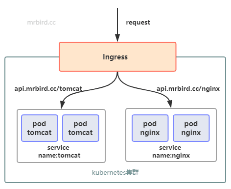
Ingress Controller
Ingress Controller并不是Kubernetes对象，而是根据Ingress对象配置，实现具体转发功能的组件统称。除了Kubernetes官方维护的GCE和Ingress Nginx外，还有许多第三方维护的实现。这里以用的较多的Ingress Nginx为例，实现Ingress Controller的部署。
因为Ingress Controller是用于处理集群外部请求访问集群内部服务的组件，所以我们需要思考，如何将Ingress Controller暴露出去。最为常见的方式主要有以下两种：
创建和Intress Controller对应的Service服务，Service通过NodePort将服务端口暴露出去；
将Ingress Controller部署到几个固定的节点上，然后通过HostPort将端口映射出去，最外层通过LVS+keepalive实现负载均衡。
因为第1种方式需要在请求链路中再加一层Service服务，性能可能会有耗损，所以我们选择第2种方式。
为了简化过程，这里只在一个节点上部署Ingress Controller，比如我们可以选择在Node1节点上部署。给Node1节点打个标签：
1 | kubectl label node node1 type="ingress" |
下载Ingress Nginx配置文件：
1 | wget https://raw.githubusercontent.com/kubernetes/ingress-nginx/master/deploy/static/mandatory.yaml |
修改该配置文件：
1 | vi mandatory.yaml |
修改部分如下所示:
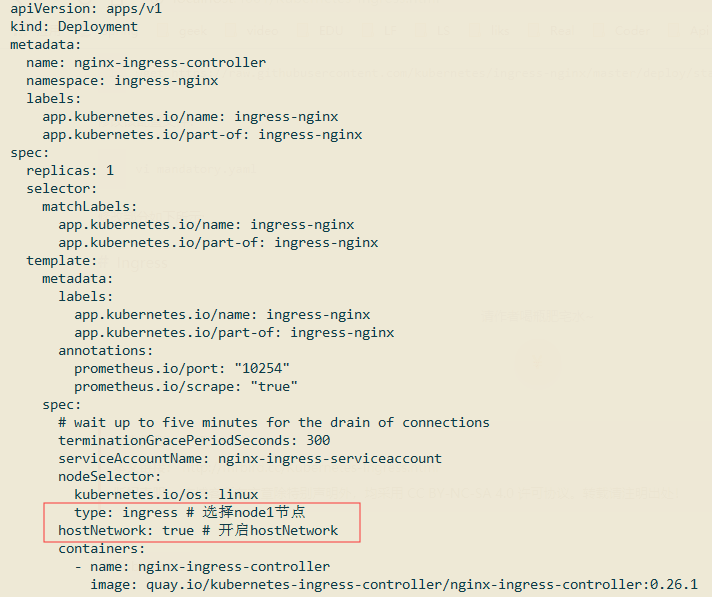
创建该配置文件：
1 | kubectl create -f mandatory.yaml |
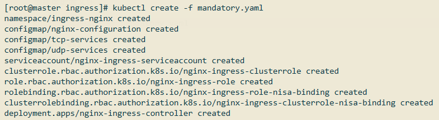
查看是否创建成功：
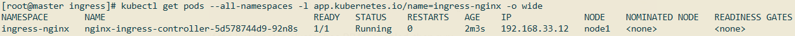
使用浏览器访问http://192.168.33.12/：
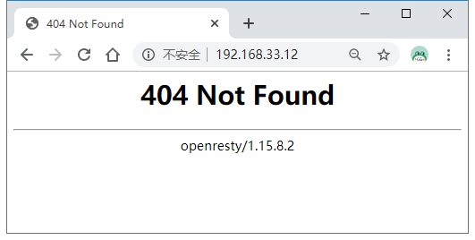
因为还没有创建Ingress，所以页面响应暂时为404。
Ingress
在创建Ingress对象前，我们需要准备好tomcat和nginx服务，供待会演示，创建demo.yml：
1 |
|
创建：
1 | kubectl create -f demo.yml |
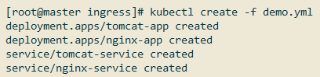
查看是否创建成功：
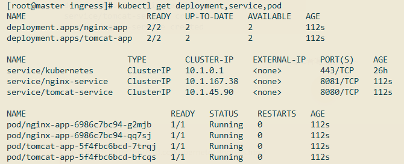
接着创建Ingress配置文件（ingress.yml）:
1 | apiVersion: networking.k8s.io/v1beta1 |
根据上述配置，当我们访问tomcat.mrbird.cc根路径的时候，请求将转发到名称为tomcat-service，端口为8080的service上，根据上面demo.yml的配置，该service对应两个tomcat pod；访问nginx.mrbird.cc根路径的时候，请求将转发到nginx-service。
创建该Ingress：
1 | kubectl create -f ingress.yml |
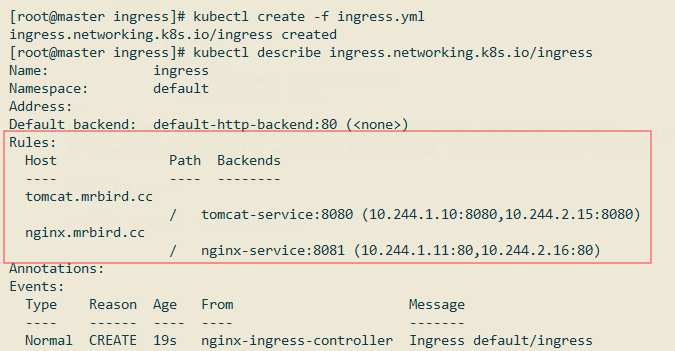
从图中可以看出，当我们访问tomcat.mrbird.cc/的时候，请求会均衡地转发到10.244.1.10:8080/和10.244.2.15:8080/。
在Windows上配置hosts域名解析：
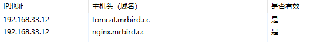
浏览器访问http://tomcat.mrbird.cc/：
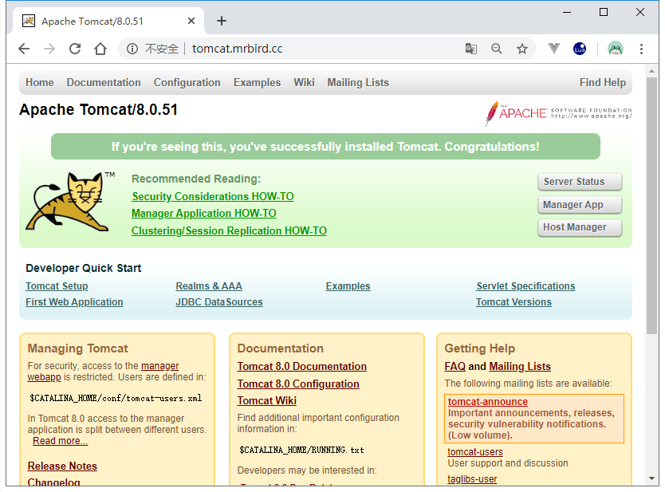
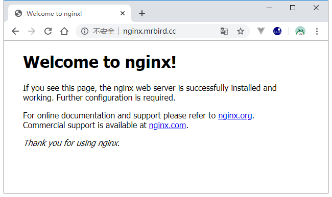
结果符合我们的预期。
Ingress Nginx实质上就是一个nginx服务，它可以自动通过我们的Ingress配置，生成相应的nginx配置文件，我们可以进入到Ingress Nginx容器内部证实这一点:
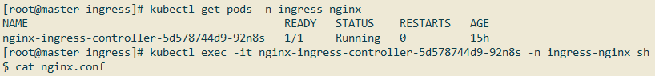
在配置文件中，可以看到下面这些配置（仅截取tomcat.mrbird.cc配置）：
1 | ... |
更多Ingress配置可以参考官方文档：https://v1-12.docs.kubernetes.io/zh/docs/concepts/services-networking/ingress/。